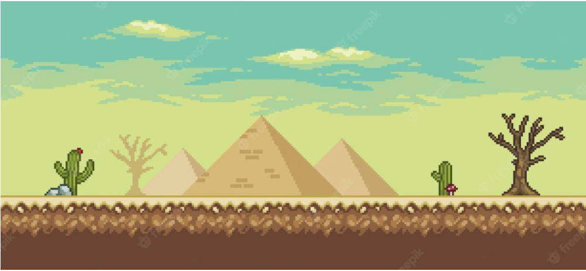
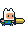
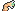
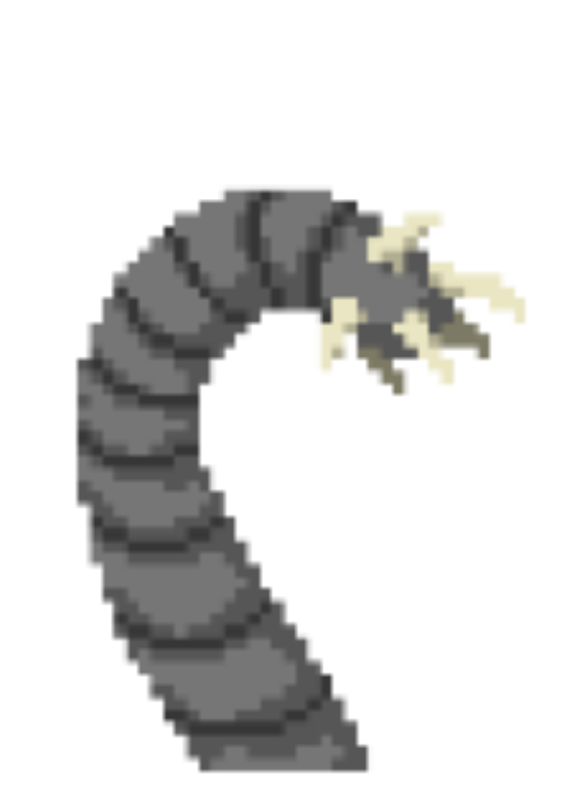

Attack on Worms A game where fun learning is the purpose. Want to know more? Keep scrolling.
Characters

Fin (you) is here to save the world with his big brain. He is able to run, attack and kill all worms on his path. He is someone who wants to show what he knows and what he has achieve. That's why he rewards himself with badges from henchworms and if he defeats a Groutan he will take one tusk of it.

This tinier worms called hecnhworms. I think there is no explanation needed for this designation. Henchworms are not the most dangerous, but some people say there are more henchworms than pigeons. Luckily for you, they only got a brain capacity to remember one topic of your material.

He self is too old to fight in this apocalyps if that's all he wanted. The "Wise-men" give advice to Fin in times Fin's vision is not clear. This storyteller is the reason Fin fights this unexpected apocalyps.
